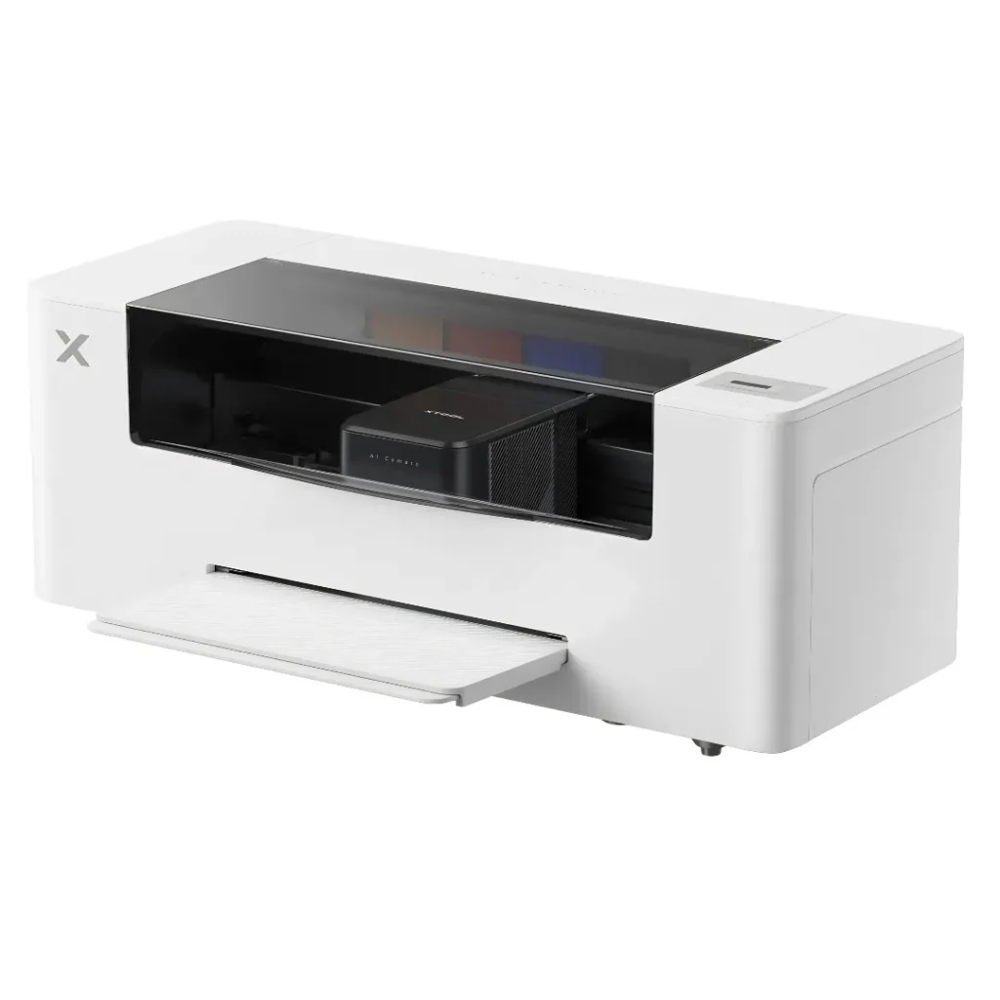

Impresora DTF xTool Apparel Printer, sistema integrado de un solo paso con horneado automático que completa el ciclo de impresión y curado de transferencias textiles de forma automatizada.
En stock. Envío 7-14 días.
Los botones de compra no funcionan: esta página es la maqueta para ver al asistente trabajando con vuestros datos.
Tal cual está publicado en vuestra web. El asistente solo puede afirmar lo que hay aquí: si le preguntan algo que no aparece, lo dice y avisa a una persona.
Descripción del producto Conoce el equipo XTOOL · APPAREL PRINTER · 35 CM La impresora DTF textil xTool Apparel Printer (35 cm) es un sistema direct-to-film automatizado que resuelve el flujo completo imprimir-empolvar-hornear en un clic : imprime CMYK más blanco cubriente sobre film tipo A3, distribuye el polvo adhesivo y coordina el curado sin intervención. Con doble cabezal Epson i1600 , color certificado G7 y autolimpieza 24/7, la xTool Apparel Printer es la línea DTF llave en mano para el taller que estampa camisetas, sudaderas y merchandising bajo demanda. Direct-to-film automatizado Ancho de impresión de 35,5 cm (14″) sobre film A3 La impresora DTF textil xTool Apparel Printer imprime con un ancho de 35,5 cm (14″) sobre film tipo A3, con longitud de impresión de hasta ~46 cm (18″) y corte de hoja automático. Monta un doble cabezal Epson i1600 (matriz NPI 300, gota de 3,8 pL) con precisión de color certificada G7 , y alcanza una resolución de hasta 720×1.800 dpi y una velocidad de hasta 50 ft²/h . Imprime en tinta DTF de CMYK más blanco cubriente sobre film PET, para estampar cualquier tejido y color. Como sistema con mantenimiento de ciclo de vida automatizado, la impresora DTF textil xTool Apparel Printer incorpora una cámara AI de 16 MP para la calibración y el control de inyectores, de modo que la calidad de color y la fiabilidad se mantienen a lo largo de la producción con consumibles certificados OEKO-TEX. 35,5 cm · 14″ Ancho de impresión sobre film A3 720×1.800 dpi Doble cabezal Epson i1600 · G7 Hasta 50 ft²/h Velocidad de impresión DTF Autolimpieza 24/7 Mantenimiento SmartCycle desatendido De la impresión al curado sin intervención DTF automatizado de impresión a curado en un clic Lo que distingue a la impresora DTF textil xTool Apparel Printer (35 cm) dentro del silo es su flujo automatizado en un clic : la impresión del film, la distribución del polvo adhesivo termofusible y el curado se encadenan sin que el operario tenga que manipular cada etapa. La integración nativa con el horno-agitador de la marca convierte el proceso en un imprimir-empolvar-hornear continuo, mientras la autolimpieza 24/7 mantiene el cabezal listo entre trabajos. Es la línea DTF pensada para producir bajo demanda con la mínima intervención manual. Flujo en un clic Imprimir, empolvar y hornear encadenados en un proceso continuo y desatendido. Autolimpieza 24/7 Limpieza de cabezal, hidratación y circulación de tinta blanca automáticas entre trabajos. Cámara AI de 16 MP Calibración y control de inyectores automáticos para color G7 estable en producción. El equipo en acción La impresora DTF textil xTool Apparel Printer (35 cm) en funcionamiento xTool Aplicaciones Aplicaciones: camisetas, sudaderas, gorras y bolsas La impresora DTF textil xTool Apparel Printer (35 cm) cubre la estampación bajo demanda del taller con blanco cubriente sobre cualquier prenda y tejido. 01 Camisetas y sudaderas Estampación DTF a todo color sobre algodón, poliéster y mezclas, en cualquier color de prenda. 02 Gorras y bolsas Transfers DTF aplicados sobre gorras, bolsas y accesorios textiles con solidez de lavado. 03 Workwear y uniformes Ropa laboral y uniformidad con blanco cubriente sobre tejido oscuro y consumibles OEKO-TEX. 04 Merchandising bajo demanda Series cortas y unidades sueltas de textil promocional resueltas con el flujo en un clic. Para una línea DTF llave en mano Por qué la xTool Apparel Printer automatiza la producción DTF La impresora DTF textil xTool Apparel Printer (35 cm) es la elección del taller que quiere una línea DTF llave en mano y desatendida: el flujo en un clic, la autolimpieza 24/7 con circulación de tinta blanca y la cámara AI de calibración reducen la intervención manual y estabilizan el color G7 en la estampación bajo demanda. El doble cabezal Epson i1600 y los consumibles certificados OEKO-TEX completan un sistema autocontenido de impresión, empolvado y curado. Dentro de la oferta DTF del silo, la xTool Apparel Printer es el sistema automatizado autocontenido; para una línea DTF modular escalable por ancho —de los 20 cm de entrada a los 60 cm industriales—, el catálogo ofrece la familia de impresoras DTF InkOne. Automatización y ecosistema Corte de film, horno-agitador y software xTool Creative Space La impresora DTF textil xTool Apparel Printer (35 cm) automatiza el corte de film , la distribución del polvo adhesivo sobre la tinta húmeda y la autolimpieza 24/7 del cabezal, y se integra de forma nativa con el horno-agitador OS1 Shaker Oven para el curado, cerrando el flujo imprimir-empolvar-hornear. El diseño se prepara con el software xTool Creative Space para Windows y Mac, y la fijación final se realiza con prensa térmica (orientativo 160 °C durante 6 s). Los consumibles nativos —tinta DTF con blanco, film PET y polvo adhesivo termofusible— cuentan con certificación OEKO-TEX. Garantía, servicio y presupuesto CPS Spain, como distribuidor oficial xTool en España, entrega la impresora DTF textil xTool Apparel Printer (35 cm) lista para autoinstalar —la pones en marcha tú mismo de forma sencilla—, con servicio técnico oficial prestado directamente por xTool , y con garantía de fabricante de 24 meses en Europa se
Abajo a la derecha está Cepe, el asistente. Lleva dentro los datos reales de esta ficha, los de la otra máquina que nos indicasteis y 44 consumibles y repuestos con su precio y disponibilidad.